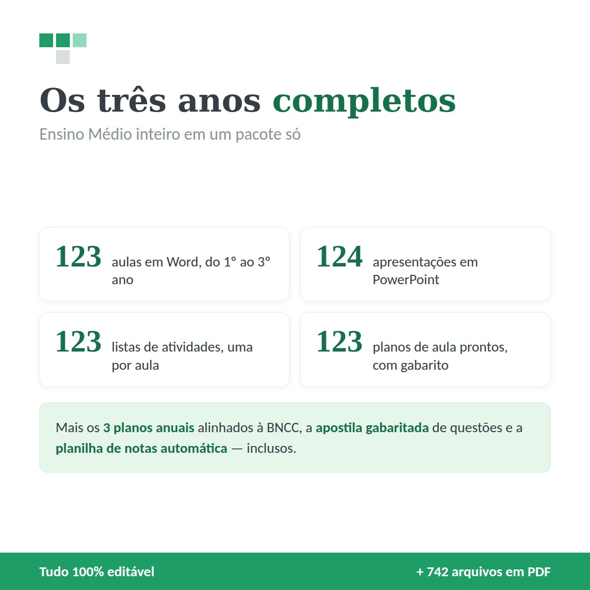
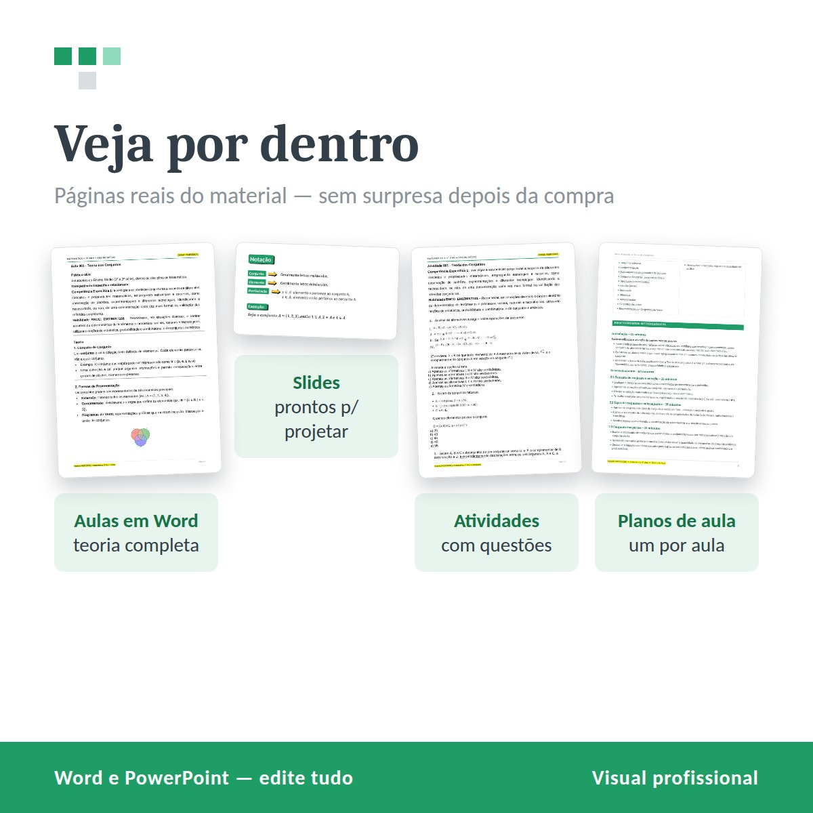
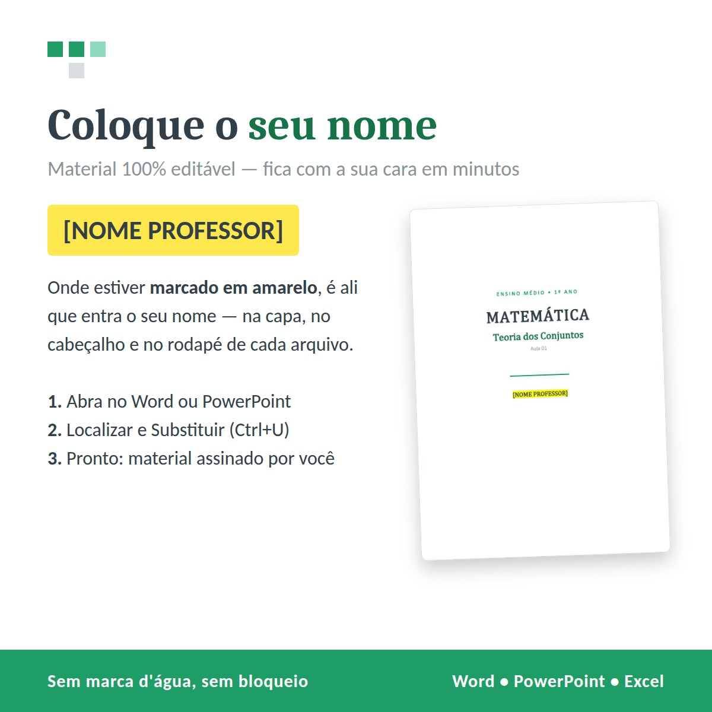
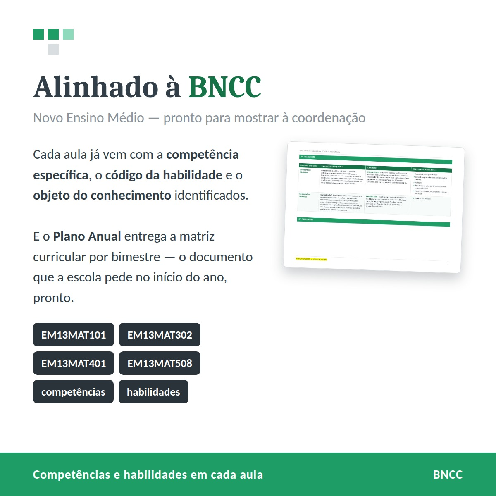
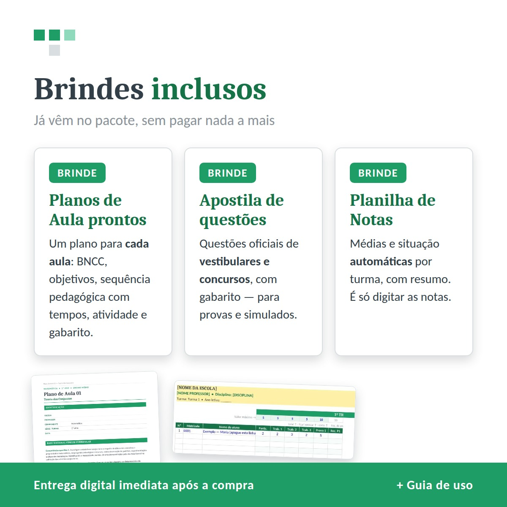

1º, 2º e 3º ano completos: 123 aulas, 124 apresentações, 123 atividades e 123 planos de aula. Tudo editável e alinhado à BNCC.
Se você dá aula nas três séries — ou se um ano você pega o 1º e no outro cai no 3º —, comprar separado sai mais caro e ainda te deixa correndo atrás do que falta na hora errada.
O combo resolve isso de uma vez: os três anos, com a mesma organização, os mesmos marcadores e o mesmo padrão de plano de aula.



Mesma estrutura de aula, mesmo marcador de nome, mesmo formato de plano.
Isso importa mais do que parece: você aprende a usar o material uma vez e ele funciona igual nas três séries. E quando a coordenação pede o plano, você entrega os três no mesmo formato.

Um para cada uma das 123 aulas.
Vestibulares e concursos, gabaritada.
5 turmas, recuperações automáticas.

Eng. Cássio Moura — Engenheiro de Produção e Engenheiro de Segurança do Trabalho (CREA-MG 401683), licenciado em Matemática.
Este material não é um apanhado da internet: é o que eu uso nas minhas próprias turmas. Cada aula, cada atividade e cada plano passou pela sala de aula de verdade, foi corrigido depois de dar errado, e voltou melhor no ano seguinte. O que você está levando é a organização de quem vive o ano letivo na prática.
"Tudo que é verdadeiro respeita o tempo."
Eng. Prof. Cássio Moura
Pagamento único, os três anos juntos. Sai bem abaixo de comprar um por um.
Quero os três anos por R$ --acesso imediato após o pagamentoPode. Cada ano tem a sua própria página, com o mesmo material. O combo existe para quem quer os três.
Assim que o pagamento é confirmado, a Kiwify libera o seu acesso na hora, por e-mail. Não tem espera, não tem frete, não tem transportadora.
Pode, e por quantos anos quiser. A licença é de uso profissional individual: você usa nas suas aulas à vontade. O que não pode é revender ou publicar o arquivo na internet.
Você tem 7 dias de garantia. Se não for o que você esperava, é só pedir o reembolso dentro do prazo e a Kiwify devolve o valor.
Não. Os arquivos abrem no Word, no PowerPoint e no Excel comuns — ou nas versões gratuitas (LibreOffice, Google). E tem um leia-me explicando por onde começar.
Consegue. Quem responde é quem fez o material. Dúvida de uso ou arquivo com problema, eu resolvo.